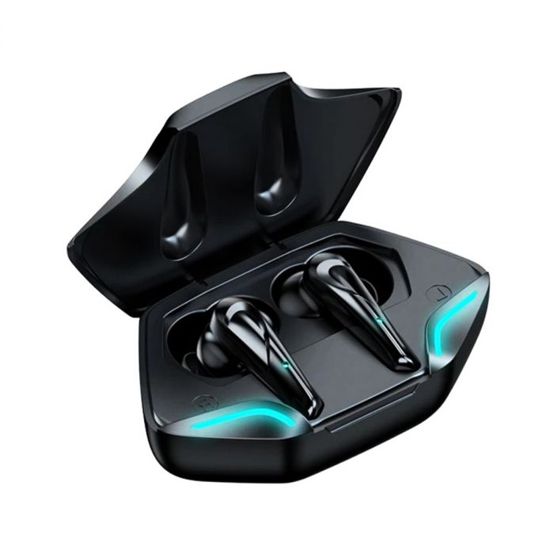

AURICULARES INALÁMBRICOS SUONO BLUETOOTH 5,0 GAMER EDITION NEGRO
Carácteristicas: 1. Rango de transmisión Bluetooth: 10 metros 2. Capacidad de la batería recargable: 300 Mah 3. Capacidad de los auriculares de la batería: 40 Mah 4. Tiempo de Trabajo: alrededor de 2-5 horas 5. Tiempo de carga: aproximadamente 1-2 horas 6. Tiempo en espera: aproximadamente 150 horas 7.Material: plástico 8. Resistencia al agua: IPX5 9. Modo de funcionamiento: táctil 10.Compatible: Android, iOS, Microsoft, Tablet, el 99% de los teléfonos con Bluetooth. Características: 1. Hierro móvil de alta fidelidad de frecuencia completa 2. Pantalla de potencia en tiempo Real, nivel de potencia de un vistazo 3. Los oídos izquierdo y derecho se pueden usar por separado y se pueden combinar de forma independiente con dispositivos Bluetooth. 4. Diseño de botones inteligentes, fácil de operar 5. Bluetooth 5,0, bajo consumo de energía